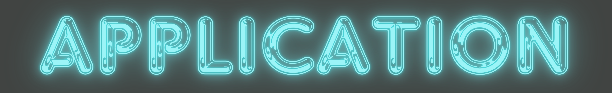
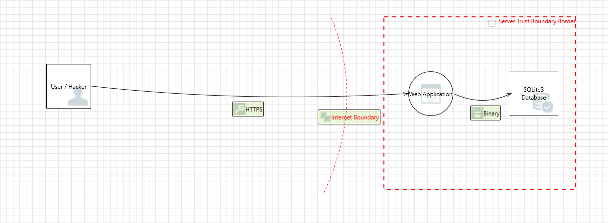
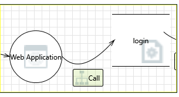
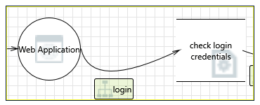
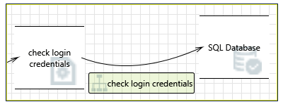
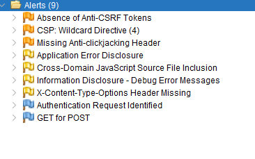
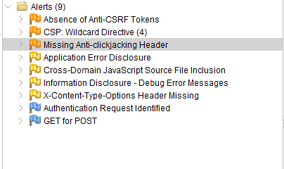

Goal
The goal is to imporve my application security and reduce the risk of attacks by testing the application througout the Software Development Life Cycle. This document is recording the 'the test early and test often' methodology applied threat modeling, automated testing (Snyk), code review and pentesting techniques.
The Journey
Before Development Begins
I created a threat model using Microsoft Thread Modeling Tool to identify the possible threats on a basic login function using a typical login form. The results identified an extensive list of threats that can be avoided during built and the basis of the metrics criteria.
Threat Model
Login Threat Model 
Measurement and Metrics Criteria and Ensure Traceability

Interaction: Call
| Threat | Category |
|---|---|
| Potential Excessive Resource Consumption for Web Application or login | Denial Of Service |
| Weak Credential Storage | Information Disclosure |
| Potential Weak Protections for Audit Data | Repudiation |
| Insufficient Auditing | Repudiation |
| Lower Trusted Subject Updates Logs | Repudiation |
| Data Logs from an Unknown Source | Repudiation |
| Risks from Logging | Tampering |
| Spoofing of Destination Data Store login | Spoofing |
| Data Logs from an Unknown Source | Repudiation |
| Data Logs from an Unknown Source | Repudiation |
Interaction: Login

| Threat | Category |
|---|---|
| Potential Excessive Resource Consumption for Web Application or check login credentials | Denial Of Service |
| Spoofing of Destination Data Store check login credentials | Spoofing |
Interaction: Check Login Credentials

| Threat | Category |
|---|---|
| Spoofing of Destination Data Store SQL Database | Spoofing |
| Spoofing of Source Data Store check login credentials | Spoofing |
During Design
Security Requirements
- User management
- Authentication
- Authorization
- Data confidentiality
- Integrity
- Accountability
- Session management
- Transport security
- Tiered system segregation
- Legislative and standards compliance (including privacy, government, and industry standards)
Secure: Flask provides built-in support for handling common web security features like cross-site request forgery (CSRF) protection and secure cookie handling.
Step 1 : Basic Login and possible vulnerabilities
Is started out with a standard login page and listed the common vulnerabilities.

Step 2 : Improved vulnerabilities through design
During Development
Next, I looked at the vulnerabilities that can be reduced through design.
- I removed any text and hints that can indicate to an hacker the possible solution
- I added additional steps

References
Testing for Account Enumeration and Guessable User Account
11 Common Authentication Vulnerabilities You Need to Know
-
categories of vulnerabilities
- CVEs and CWEs
-
memory management vulnerabilities
attacks
code corruption attacks
control-fow hijack attacks
information leak attack
data-only-attacks
safe languages
temporal vulnerabilities
spatial vulnerabilities
-
structured output generation vulnerabilities
SQL injection
command injection vulnerabilities
script injection vulnerabilities (XSS)
stored injection vulnerabilites
higher-order injection vulnerabilities
-
race condition vulnerabilities
concurrency bugs
time-of-check to time-of-use
-
API vulnerabilities
correct use
correct implementation
-
side-channel vulnerabilities
software-based side-channels
covert channels
micro-architectual effects
fault-injection attacks
physical fault-injection
software fault-injection
Rowhammer
-
prevention of vulnerabilities
-
API design
defensive programming
sandboxing
principle of least privilege
assertions
contracts
-
coding practices
coding guidelines
MISRA
dangerous functions
programming idioms
resource acquisition is initialisation
move semantics
smart pointers
checking compliance
-
erroneous execution
trapped errors
untrapped errors
-
language design and type systems
memory management mitigations
immutable state
dynamic checks
static checks
-
structured output generations mitigations
type systems
query generation
-
race condition mitigation
ownership
aliasing
-
information flow
- mitigating exploitation
-
runtime detection of attacks
stack canaries non-executable memory
control fow integrity
-
automated software diversity
ASLR
-
limiting privileges
-
sandboxing
monitors
jails
compartmentalisation
object-capability systems
-
-
-
detection of vulnerabilities